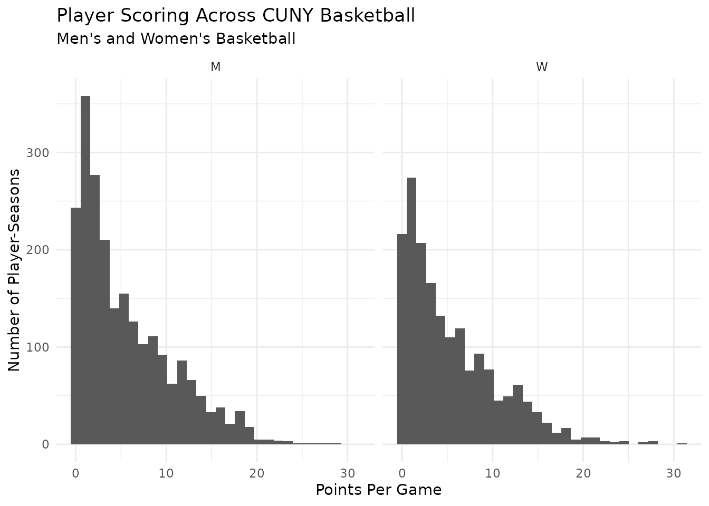

Getting Started with CUNYsports
Christian Martinez
Source:vignettes/getting-started-CUNYsports.Rmd
getting-started-CUNYsports.RmdIntroduction
Welcome to CUNYsports, an R package for accessing and
exploring collegiate athletics data from the City University of
New York (CUNY).
CUNY athletics data are publicly available across individual college athletics websites, but working with these data at scale can require substantial scraping, cleaning, standardization, and organization.
CUNYsports provides a centralized interface for working
with cleaned and organized CUNY athletics data directly in R.
The package includes an SQLite database containing information about
teams, players, games, seasons, schools, opponents, and other aspects of
CUNY athletics. Rather than requiring users to interact with the
database directly, CUNYsports provides functions for
discovering, documenting, and retrieving the available data.
The basic workflow is:
Discover → Understand → Retrieve → Analyze
The initial release of CUNYsports focuses on
CUNY men’s and women’s basketball, with the database
designed to support additional sports in the future.
Discovering Available Data
The first step when using CUNYsports is figuring out
what data are available.
The cuny_table_names() function
The simplest way to explore the database is with
cuny_table_names().
cuny_table_names()
#> # A tibble: 23 × 1
#> table_name
#> <chr>
#> 1 basketball_all_cat_leaders_final
#> 2 basketball_all_seasons_player_averages_final
#> 3 basketball_all_seasons_player_conference_final
#> 4 basketball_all_seasons_player_overall_final
#> 5 basketball_all_seasons_player_scoring_final
#> 6 basketball_all_seasons_player_team_averages_final
#> 7 basketball_all_seasons_player_team_conference_final
#> 8 basketball_all_seasons_player_team_overall_final
#> 9 basketball_all_seasons_player_team_scoring_final
#> 10 basketball_all_seasons_team_final
#> # ℹ 13 more rowsThis returns the names of all tables currently available in the CUNY Sports database.
The database contains both analytical tables and dimension tables.
Basketball tables begin with basketball_, while dimension
tables such as dim_players and dim_schools
provide information used throughout the database.
The cuny_find_tables() function
As the database grows, users may not know the exact name of the table they need.
The cuny_find_tables() function allows users to search
the table catalog using a keyword.
For example, we can search for tables related to player data:
cuny_find_tables("player")
#> # A tibble: 12 × 11
#> table_name display_name description grain season_coverage source
#> <chr> <chr> <chr> <chr> <chr> <chr>
#> 1 dim_players Player Dime… Lookup tab… One … 2012-13 to pre… Deriv…
#> 2 dim_player_year Player Years Bridge tab… One … All player-sea… Deriv…
#> 3 basketball_all_seasons… All Seasons… Season-lev… One … All seasons re… Scrap…
#> 4 basketball_all_seasons… All Seasons… Season-lev… One … All seasons re… Scrap…
#> 5 basketball_all_seasons… All Seasons… Season-lev… One … All conference… Scrap…
#> 6 basketball_all_seasons… All Seasons… Season-lev… One … All conference… Scrap…
#> 7 basketball_all_seasons… All Seasons… Season-lev… One … All seasons re… Scrap…
#> 8 basketball_all_seasons… All Seasons… Season-lev… One … All seasons re… Scrap…
#> 9 basketball_all_seasons… All Seasons… Season-lev… One … All seasons re… Scrap…
#> 10 basketball_all_seasons… All Seasons… Season-lev… One … All seasons re… Scrap…
#> 11 basketball_game_high_i… Individual … Highest si… One … All seasons re… Scrap…
#> 12 basketball_all_cat_lea… All Categor… Player-sea… One … All seasons re… Scrap…
#> # ℹ 5 more variables: primary_key_candidate <chr>, foreign_keys_needed <chr>,
#> # likely_uses <chr>, cleaning_priority <chr>, notes <chr>We could instead search for other topics:
cuny_find_tables("scoring")
#> # A tibble: 2 × 11
#> table_name display_name description grain season_coverage source
#> <chr> <chr> <chr> <chr> <chr> <chr>
#> 1 basketball_all_seasons_… All Seasons… Season-lev… One … All seasons re… Scrap…
#> 2 basketball_all_seasons_… All Seasons… Season-lev… One … All seasons re… Scrap…
#> # ℹ 5 more variables: primary_key_candidate <chr>, foreign_keys_needed <chr>,
#> # likely_uses <chr>, cleaning_priority <chr>, notes <chr>
cuny_find_tables("game")
#> # A tibble: 16 × 11
#> table_name display_name description grain season_coverage source
#> <chr> <chr> <chr> <chr> <chr> <chr>
#> 1 dim_opponents Opponent Di… Lookup tab… One … 2012-13 to pre… Deriv…
#> 2 dim_games Game Dimens… Lookup tab… One … 2012-13 to pre… Deriv…
#> 3 basketball_all_seasons… All Seasons… Season-lev… One … All seasons re… Scrap…
#> 4 basketball_all_seasons… All Seasons… Season-lev… One … All conference… Scrap…
#> 5 basketball_all_seasons… All Seasons… Season-lev… One … All conference… Scrap…
#> 6 basketball_all_seasons… All Seasons… Season-lev… One … All seasons re… Scrap…
#> 7 basketball_all_seasons… All Seasons… Season-lev… One … All seasons re… Scrap…
#> 8 basketball_all_seasons… All Seasons… Season-lev… One … All seasons re… Scrap…
#> 9 basketball_game_by_gam… Game-by-Gam… Game-level… One … All game-level… Scrap…
#> 10 basketball_game_by_gam… Game-by-Gam… Game-level… One … All game-level… Scrap…
#> 11 basketball_game_by_gam… Game-by-Gam… Game-level… One … All game-level… Scrap…
#> 12 basketball_game_by_gam… Game-by-Gam… Season-lev… One … All seasons re… Scrap…
#> 13 basketball_game_by_gam… Game-by-Gam… Game-level… One … All game-level… Scrap…
#> 14 basketball_game_high_t… Team Game H… Highest si… One … All seasons re… Scrap…
#> 15 basketball_game_high_i… Individual … Highest si… One … All seasons re… Scrap…
#> 16 basketball_all_cat_lea… All Categor… Player-sea… One … All seasons re… Scrap…
#> # ℹ 5 more variables: primary_key_candidate <chr>, foreign_keys_needed <chr>,
#> # likely_uses <chr>, cleaning_priority <chr>, notes <chr>This provides a convenient way to discover relevant tables without memorizing database table names.
Understanding a Table
After identifying a table of interest, the next step is understanding what it contains.
For this vignette, we will use:
basketball_all_seasons_player_overall_final
This table contains season-level overall player statistics for CUNY basketball.
The cuny_table_info() function
The cuny_table_info() function provides table-level
documentation.
cuny_table_info(
"basketball_all_seasons_player_overall_final"
)
#> # A tibble: 1 × 11
#> table_name display_name description grain season_coverage source
#> <chr> <chr> <chr> <chr> <chr> <chr>
#> 1 basketball_all_seasons_… All Seasons… Season-lev… One … All seasons re… Scrap…
#> # ℹ 5 more variables: primary_key_candidate <chr>, foreign_keys_needed <chr>,
#> # likely_uses <chr>, cleaning_priority <chr>, notes <chr>The returned information describes characteristics such as the table’s:
- Description
- Grain
- Season coverage
- Source
- Potential keys and relationships
- Likely analytical uses
- Additional notes
This is particularly useful when several tables contain related types of statistics.
The cuny_columns_info() function
Once we understand the purpose of the table, we can inspect its
individual variables using cuny_columns_info().
cuny_columns_info(
"basketball_all_seasons_player_overall_final"
)
#> # A tibble: 43 × 8
#> table_name column_name suggested_name data_type description example key_type
#> <chr> <chr> <chr> <chr> <chr> <chr> <chr>
#> 1 basketball… jersey_num… jersey_number character Jersey num… 1.0 Descrip…
#> 2 basketball… player_name player_name character Human-read… Joe Ch… Descrip…
#> 3 basketball… season_lab… season_label character Human-read… 2025-26 Descrip…
#> 4 basketball… games_play… games_played integer Number of … 26.0 Measure
#> 5 basketball… games_star… games_started integer Number of … 26.0 Measure
#> 6 basketball… total_minu… total_minutes numeric Total minu… 790.0 Measure
#> 7 basketball… minutes_pe… minutes_per_g… numeric Average mi… 30.4 Measure
#> 8 basketball… field_goal… field_goals_m… integer Total fiel… 122.0 Measure
#> 9 basketball… field_goal… field_goal_at… integer Total fiel… 374.0 Measure
#> 10 basketball… field_goal… field_goal_pe… numeric Proportion… 0.326 Measure
#> # ℹ 33 more rows
#> # ℹ 1 more variable: notes <chr>The column catalog provides information about each documented variable, including:
- Column name
- Suggested name
- Data type
- Description
- Example values
- Key type
- Additional notes
Together, cuny_table_info() and
cuny_columns_info() allow users to understand the structure
of the data before beginning an analysis.
Retrieving Data
Once we have identified and documented the table we want, we can
retrieve it using cuny_pull_table().
player_stats <- cuny_pull_table(
"basketball_all_seasons_player_overall_final"
)
player_stats |>
slice_head(n = 6)
#> jersey_number player_name season_label games_played games_started
#> 1 11 Jamir Stewart 2025-26 27 26
#> 2 00 Keyshawn Miller 2025-26 26 25
#> 3 10 Aidony Nivar 2025-26 16 12
#> 4 02 Adrian Kopec 2025-26 27 27
#> 5 24 Ronnie McIntyre 2025-26 25 10
#> 6 23 Amare Jordan 2025-26 27 12
#> total_minutes minutes_per_game field_goals_made field_goal_attempts
#> 1 897 33.2 137 348
#> 2 948 36.5 149 357
#> 3 506 31.6 75 184
#> 4 943 34.9 100 280
#> 5 584 23.4 61 179
#> 6 571 21.1 58 105
#> field_goal_percentage three_pointers_made three_point_attempts
#> 1 0.394 69 186
#> 2 0.417 30 95
#> 3 0.408 43 112
#> 4 0.357 54 166
#> 5 0.341 35 100
#> 6 0.552 6 17
#> three_point_percentage free_throws_made free_throw_attempts
#> 1 0.371 122 150
#> 2 0.316 80 153
#> 3 0.384 25 35
#> 4 0.325 24 35
#> 5 0.350 9 14
#> 6 0.353 37 69
#> free_throw_percentage total_points points_per_game offensive_rebounds
#> 1 0.813 465 17.2 20
#> 2 0.523 408 15.7 39
#> 3 0.714 218 13.6 9
#> 4 0.686 278 10.3 33
#> 5 0.643 166 6.6 15
#> 6 0.536 159 5.9 30
#> defensive_rebounds total_rebounds rebounds_per_game personal_fouls assists
#> 1 65 85 3.1 68 68
#> 2 178 217 8.3 65 137
#> 3 45 54 3.4 39 38
#> 4 95 128 4.7 40 67
#> 5 73 88 3.5 47 44
#> 6 64 94 3.5 56 32
#> turnovers steals blocks effective_field_goal_percentage
#> 1 87 31 6 0.493
#> 2 75 83 22 0.459
#> 3 23 20 3 0.524
#> 4 56 17 4 0.454
#> 5 38 18 9 0.439
#> 6 37 21 10 0.581
#> true_shooting_percentage three_point_attempt_rate free_throw_rate
#> 1 0.562 0.534 0.431
#> 2 0.481 0.266 0.429
#> 3 0.547 0.609 0.190
#> 4 0.471 0.593 0.125
#> 5 0.448 0.559 0.078
#> 6 0.587 0.162 0.657
#> assist_turnover_ratio offensive_rebound_share points_per_game_alt
#> 1 0.782 0.235 17.2
#> 2 1.827 0.180 15.7
#> 3 1.652 0.167 13.6
#> 4 1.196 0.258 10.3
#> 5 1.158 0.170 6.6
#> 6 0.865 0.319 5.9
#> points_per_40_minutes split_type school gender season_id school_id
#> 1 20.7 overall johnjayathletics M 21 6
#> 2 17.2 overall johnjayathletics M 21 6
#> 3 17.2 overall johnjayathletics M 21 6
#> 4 11.8 overall johnjayathletics M 21 6
#> 5 11.4 overall johnjayathletics M 21 6
#> 6 11.1 overall johnjayathletics M 21 6
#> player_id year_with_team
#> 1 1261 4
#> 2 1305 2
#> 3 1160 1
#> 4 1159 4
#> 5 1352 1
#> 6 1170 3The result is returned to R and can be used with familiar tools from
packages such as dplyr, tidyr, and
ggplot2.
For example, men’s and women’s basketball records are stored together
and can be distinguished using the gender column.
To work with women’s basketball:
womens_player_stats <- player_stats |>
filter(gender == "W")
womens_player_stats |>
slice_head(n = 6)
#> jersey_number player_name season_label games_played games_started
#> 1 01 Michaela Lattimore 2025-26 26 26
#> 2 05 Bryan Bascones 2025-26 26 24
#> 3 23 Briana Minick 2025-26 27 24
#> 4 12 Natalie Simonds 2025-26 27 27
#> 5 30 Miah Crockett 2025-26 25 22
#> 6 04 Essence Richardson 2025-26 27 8
#> total_minutes minutes_per_game field_goals_made field_goal_attempts
#> 1 718 27.6 161 332
#> 2 738 28.4 104 238
#> 3 593 22.0 87 279
#> 4 778 28.8 69 215
#> 5 604 24.2 69 203
#> 6 644 23.9 80 216
#> field_goal_percentage three_pointers_made three_point_attempts
#> 1 0.485 0 0
#> 2 0.437 1 8
#> 3 0.312 11 49
#> 4 0.321 14 48
#> 5 0.340 13 50
#> 6 0.370 27 98
#> three_point_percentage free_throws_made free_throw_attempts
#> 1 0.000 84 118
#> 2 0.125 36 61
#> 3 0.224 52 82
#> 4 0.292 80 107
#> 5 0.260 65 86
#> 6 0.276 19 34
#> free_throw_percentage total_points points_per_game offensive_rebounds
#> 1 0.712 406 15.6 111
#> 2 0.590 245 9.4 76
#> 3 0.634 237 8.8 28
#> 4 0.748 232 8.6 27
#> 5 0.756 216 8.6 38
#> 6 0.559 206 7.6 36
#> defensive_rebounds total_rebounds rebounds_per_game personal_fouls assists
#> 1 274 385 14.8 79 43
#> 2 96 172 6.6 31 32
#> 3 86 114 4.2 50 66
#> 4 103 130 4.8 74 99
#> 5 52 90 3.6 65 40
#> 6 93 129 4.8 27 45
#> turnovers steals blocks effective_field_goal_percentage
#> 1 63 40 39 0.485
#> 2 34 22 8 0.439
#> 3 95 51 2 0.332
#> 4 115 43 13 0.353
#> 5 67 33 4 0.372
#> 6 45 38 3 0.433
#> true_shooting_percentage three_point_attempt_rate free_throw_rate
#> 1 0.529 0.000 0.355
#> 2 0.463 0.034 0.256
#> 3 0.376 0.176 0.294
#> 4 0.443 0.223 0.498
#> 5 0.448 0.246 0.424
#> 6 0.446 0.454 0.157
#> assist_turnover_ratio offensive_rebound_share points_per_game_alt
#> 1 0.683 0.288 15.6
#> 2 0.941 0.442 9.4
#> 3 0.695 0.246 8.8
#> 4 0.861 0.208 8.6
#> 5 0.597 0.422 8.6
#> 6 1.000 0.279 7.6
#> points_per_40_minutes split_type school gender season_id school_id
#> 1 22.6 overall johnjayathletics W 21 6
#> 2 13.3 overall johnjayathletics W 21 6
#> 3 16.0 overall johnjayathletics W 21 6
#> 4 11.9 overall johnjayathletics W 21 6
#> 5 14.3 overall johnjayathletics W 21 6
#> 6 12.8 overall johnjayathletics W 21 6
#> player_id year_with_team
#> 1 1330 3
#> 2 1196 1
#> 3 1192 2
#> 4 1338 4
#> 5 1327 1
#> 6 1237 2Similarly, men’s basketball can be selected using:
mens_player_stats <- player_stats |>
filter(gender == "M")
mens_player_stats |>
slice_head(n = 6)
#> jersey_number player_name season_label games_played games_started
#> 1 11 Jamir Stewart 2025-26 27 26
#> 2 00 Keyshawn Miller 2025-26 26 25
#> 3 10 Aidony Nivar 2025-26 16 12
#> 4 02 Adrian Kopec 2025-26 27 27
#> 5 24 Ronnie McIntyre 2025-26 25 10
#> 6 23 Amare Jordan 2025-26 27 12
#> total_minutes minutes_per_game field_goals_made field_goal_attempts
#> 1 897 33.2 137 348
#> 2 948 36.5 149 357
#> 3 506 31.6 75 184
#> 4 943 34.9 100 280
#> 5 584 23.4 61 179
#> 6 571 21.1 58 105
#> field_goal_percentage three_pointers_made three_point_attempts
#> 1 0.394 69 186
#> 2 0.417 30 95
#> 3 0.408 43 112
#> 4 0.357 54 166
#> 5 0.341 35 100
#> 6 0.552 6 17
#> three_point_percentage free_throws_made free_throw_attempts
#> 1 0.371 122 150
#> 2 0.316 80 153
#> 3 0.384 25 35
#> 4 0.325 24 35
#> 5 0.350 9 14
#> 6 0.353 37 69
#> free_throw_percentage total_points points_per_game offensive_rebounds
#> 1 0.813 465 17.2 20
#> 2 0.523 408 15.7 39
#> 3 0.714 218 13.6 9
#> 4 0.686 278 10.3 33
#> 5 0.643 166 6.6 15
#> 6 0.536 159 5.9 30
#> defensive_rebounds total_rebounds rebounds_per_game personal_fouls assists
#> 1 65 85 3.1 68 68
#> 2 178 217 8.3 65 137
#> 3 45 54 3.4 39 38
#> 4 95 128 4.7 40 67
#> 5 73 88 3.5 47 44
#> 6 64 94 3.5 56 32
#> turnovers steals blocks effective_field_goal_percentage
#> 1 87 31 6 0.493
#> 2 75 83 22 0.459
#> 3 23 20 3 0.524
#> 4 56 17 4 0.454
#> 5 38 18 9 0.439
#> 6 37 21 10 0.581
#> true_shooting_percentage three_point_attempt_rate free_throw_rate
#> 1 0.562 0.534 0.431
#> 2 0.481 0.266 0.429
#> 3 0.547 0.609 0.190
#> 4 0.471 0.593 0.125
#> 5 0.448 0.559 0.078
#> 6 0.587 0.162 0.657
#> assist_turnover_ratio offensive_rebound_share points_per_game_alt
#> 1 0.782 0.235 17.2
#> 2 1.827 0.180 15.7
#> 3 1.652 0.167 13.6
#> 4 1.196 0.258 10.3
#> 5 1.158 0.170 6.6
#> 6 0.865 0.319 5.9
#> points_per_40_minutes split_type school gender season_id school_id
#> 1 20.7 overall johnjayathletics M 21 6
#> 2 17.2 overall johnjayathletics M 21 6
#> 3 17.2 overall johnjayathletics M 21 6
#> 4 11.8 overall johnjayathletics M 21 6
#> 5 11.4 overall johnjayathletics M 21 6
#> 6 11.1 overall johnjayathletics M 21 6
#> player_id year_with_team
#> 1 1261 4
#> 2 1305 2
#> 3 1160 1
#> 4 1159 4
#> 5 1352 1
#> 6 1170 3Putting the Workflow Together
At this point, we have completed the basic CUNYsports
workflow.
We:
- Discovered available tables using
cuny_table_names() - Searched for relevant data using
cuny_find_tables() - Learned about a table using
cuny_table_info() - Examined its variables using
cuny_columns_info() - Retrieved the data using
cuny_pull_table()
In practice, the workflow can be written as:
# Discover
cuny_find_tables("player")
#> # A tibble: 12 × 11
#> table_name display_name description grain season_coverage source
#> <chr> <chr> <chr> <chr> <chr> <chr>
#> 1 dim_players Player Dime… Lookup tab… One … 2012-13 to pre… Deriv…
#> 2 dim_player_year Player Years Bridge tab… One … All player-sea… Deriv…
#> 3 basketball_all_seasons… All Seasons… Season-lev… One … All seasons re… Scrap…
#> 4 basketball_all_seasons… All Seasons… Season-lev… One … All seasons re… Scrap…
#> 5 basketball_all_seasons… All Seasons… Season-lev… One … All conference… Scrap…
#> 6 basketball_all_seasons… All Seasons… Season-lev… One … All conference… Scrap…
#> 7 basketball_all_seasons… All Seasons… Season-lev… One … All seasons re… Scrap…
#> 8 basketball_all_seasons… All Seasons… Season-lev… One … All seasons re… Scrap…
#> 9 basketball_all_seasons… All Seasons… Season-lev… One … All seasons re… Scrap…
#> 10 basketball_all_seasons… All Seasons… Season-lev… One … All seasons re… Scrap…
#> 11 basketball_game_high_i… Individual … Highest si… One … All seasons re… Scrap…
#> 12 basketball_all_cat_lea… All Categor… Player-sea… One … All seasons re… Scrap…
#> # ℹ 5 more variables: primary_key_candidate <chr>, foreign_keys_needed <chr>,
#> # likely_uses <chr>, cleaning_priority <chr>, notes <chr>
# Understand
cuny_table_info(
"basketball_all_seasons_player_overall_final"
)
#> # A tibble: 1 × 11
#> table_name display_name description grain season_coverage source
#> <chr> <chr> <chr> <chr> <chr> <chr>
#> 1 basketball_all_seasons_… All Seasons… Season-lev… One … All seasons re… Scrap…
#> # ℹ 5 more variables: primary_key_candidate <chr>, foreign_keys_needed <chr>,
#> # likely_uses <chr>, cleaning_priority <chr>, notes <chr>
cuny_columns_info(
"basketball_all_seasons_player_overall_final"
)
#> # A tibble: 43 × 8
#> table_name column_name suggested_name data_type description example key_type
#> <chr> <chr> <chr> <chr> <chr> <chr> <chr>
#> 1 basketball… jersey_num… jersey_number character Jersey num… 1.0 Descrip…
#> 2 basketball… player_name player_name character Human-read… Joe Ch… Descrip…
#> 3 basketball… season_lab… season_label character Human-read… 2025-26 Descrip…
#> 4 basketball… games_play… games_played integer Number of … 26.0 Measure
#> 5 basketball… games_star… games_started integer Number of … 26.0 Measure
#> 6 basketball… total_minu… total_minutes numeric Total minu… 790.0 Measure
#> 7 basketball… minutes_pe… minutes_per_g… numeric Average mi… 30.4 Measure
#> 8 basketball… field_goal… field_goals_m… integer Total fiel… 122.0 Measure
#> 9 basketball… field_goal… field_goal_at… integer Total fiel… 374.0 Measure
#> 10 basketball… field_goal… field_goal_pe… numeric Proportion… 0.326 Measure
#> # ℹ 33 more rows
#> # ℹ 1 more variable: notes <chr>
# Retrieve
players <- cuny_pull_table(
"basketball_all_seasons_player_overall_final"
)From here, the data are ready for analysis.
Real World Example
Suppose we are interested in exploring scoring across CUNY basketball.
Instead of beginning with the underlying athletics websites, scraping the data, and standardizing records across schools and seasons, we can search the existing CUNY Sports database.
First, let’s find tables related to scoring.
cuny_find_tables("scoring")
#> # A tibble: 2 × 11
#> table_name display_name description grain season_coverage source
#> <chr> <chr> <chr> <chr> <chr> <chr>
#> 1 basketball_all_seasons_… All Seasons… Season-lev… One … All seasons re… Scrap…
#> 2 basketball_all_seasons_… All Seasons… Season-lev… One … All seasons re… Scrap…
#> # ℹ 5 more variables: primary_key_candidate <chr>, foreign_keys_needed <chr>,
#> # likely_uses <chr>, cleaning_priority <chr>, notes <chr>We can then inspect the player scoring table:
cuny_table_info(
"basketball_all_seasons_player_scoring_final"
)
#> # A tibble: 1 × 11
#> table_name display_name description grain season_coverage source
#> <chr> <chr> <chr> <chr> <chr> <chr>
#> 1 basketball_all_seasons_… All Seasons… Season-lev… One … All seasons re… Scrap…
#> # ℹ 5 more variables: primary_key_candidate <chr>, foreign_keys_needed <chr>,
#> # likely_uses <chr>, cleaning_priority <chr>, notes <chr>And examine its available columns:
cuny_columns_info(
"basketball_all_seasons_player_scoring_final"
)
#> # A tibble: 30 × 8
#> table_name column_name suggested_name data_type description example key_type
#> <chr> <chr> <chr> <chr> <chr> <chr> <chr>
#> 1 basketball… jersey_num… jersey_number character Jersey num… 1.0 Descrip…
#> 2 basketball… player_name player_name character Human-read… Joe Ch… Descrip…
#> 3 basketball… games_play… games_played integer Number of … 26.0 Measure
#> 4 basketball… games_star… games_started integer Number of … 26.0 Measure
#> 5 basketball… total_minu… total_minutes numeric Total minu… 790.0 Measure
#> 6 basketball… field_goal… field_goals_m… integer Total fiel… 122.0 Measure
#> 7 basketball… field_goal… field_goal_at… integer Total fiel… 374.0 Measure
#> 8 basketball… field_goal… field_goal_pe… numeric Proportion… 0.326 Measure
#> 9 basketball… three_poin… three_pointer… integer Total thre… 54.0 Measure
#> 10 basketball… three_poin… three_point_a… integer Total thre… 147.0 Measure
#> # ℹ 20 more rows
#> # ℹ 1 more variable: notes <chr>Now we can retrieve the data:
scoring <- cuny_pull_table(
"basketball_all_seasons_player_scoring_final"
)
scoring |>
slice_head(n = 6)
#> jersey_number player_name games_played games_started total_minutes
#> 1 11 Jamir Stewart 27 26 897
#> 2 00 Keyshawn Miller 26 25 948
#> 3 10 Aidony Nivar 16 12 506
#> 4 02 Adrian Kopec 27 27 943
#> 5 24 Ronnie McIntyre 25 10 584
#> 6 23 Amare Jordan 27 12 571
#> field_goals_made field_goal_attempts field_goal_percentage
#> 1 137 348 0.394
#> 2 149 357 0.417
#> 3 75 184 0.408
#> 4 100 280 0.357
#> 5 61 179 0.341
#> 6 58 105 0.552
#> three_pointers_made three_point_attempts three_point_percentage
#> 1 69 186 0.371
#> 2 30 95 0.316
#> 3 43 112 0.384
#> 4 54 166 0.325
#> 5 35 100 0.350
#> 6 6 17 0.353
#> free_throws_made free_throw_attempts free_throw_percentage total_points
#> 1 122 150 0.813 465
#> 2 80 153 0.523 408
#> 3 25 35 0.714 218
#> 4 24 35 0.686 278
#> 5 9 14 0.643 166
#> 6 37 69 0.536 159
#> points_per_game season_label effective_field_goal_percentage
#> 1 17.2 2025-26 0.493
#> 2 15.7 2025-26 0.459
#> 3 13.6 2025-26 0.524
#> 4 10.3 2025-26 0.454
#> 5 6.6 2025-26 0.439
#> 6 5.9 2025-26 0.581
#> true_shooting_percentage three_point_attempt_rate free_throw_rate
#> 1 0.562 0.534 0.431
#> 2 0.481 0.266 0.429
#> 3 0.547 0.609 0.190
#> 4 0.471 0.593 0.125
#> 5 0.448 0.559 0.078
#> 6 0.587 0.162 0.657
#> points_per_40_minutes minutes_per_game split_type school gender
#> 1 20.7 33.2 scoring johnjayathletics M
#> 2 17.2 36.5 scoring johnjayathletics M
#> 3 17.2 31.6 scoring johnjayathletics M
#> 4 11.8 34.9 scoring johnjayathletics M
#> 5 11.4 23.4 scoring johnjayathletics M
#> 6 11.1 21.1 scoring johnjayathletics M
#> season_id school_id player_id year_with_team
#> 1 21 6 1261 4
#> 2 21 6 1305 2
#> 3 21 6 1160 1
#> 4 21 6 1159 4
#> 5 21 6 1352 1
#> 6 21 6 1170 3Because the data are now in R, we can use normal dplyr
operations to explore them.
For example, we can examine the distribution of points per game:
scoring |>
filter(!is.na(points_per_game)) |>
summarize(
players = n(),
average_ppg = mean(points_per_game),
median_ppg = median(points_per_game),
maximum_ppg = max(points_per_game)
)
#> players average_ppg median_ppg maximum_ppg
#> 1 4031 5.543141 4 30.9We can also compare the distribution of scoring between men’s and women’s basketball.
scoring |>
filter(!is.na(points_per_game)) |>
group_by(gender) |>
summarize(
players = n(),
average_ppg = mean(points_per_game),
median_ppg = median(points_per_game),
maximum_ppg = max(points_per_game),
.groups = "drop"
)
#> # A tibble: 2 × 5
#> gender players average_ppg median_ppg maximum_ppg
#> <chr> <int> <dbl> <dbl> <dbl>
#> 1 M 2245 5.60 4 29.1
#> 2 W 1786 5.48 4 30.9Mini Analysis
Finally, we can visualize the distribution of player scoring.
scoring |>
filter(!is.na(points_per_game)) |>
ggplot(aes(x = points_per_game)) +
geom_histogram(bins = 30) +
facet_wrap(~ gender) +
theme_minimal() +
labs(
title = "Player Scoring Across CUNY Basketball",
subtitle = "Men's and Women's Basketball",
x = "Points Per Game",
y = "Number of Player-Seasons"
)
Distribution of player points per game in CUNY basketball.
This simple example demonstrates how CUNYsports allows
users to move directly from data discovery to analysis using standard R
workflows.
Direct Database Access
For most users, cuny_pull_table() provides the easiest
way to retrieve data.
Advanced users may instead want to interact directly with the SQLite database.
The cuny_db() function opens a database connection:
con <- cuny_db()
DBI::dbListTables(con)
#> [1] "basketball_all_cat_leaders_final"
#> [2] "basketball_all_seasons_player_averages_final"
#> [3] "basketball_all_seasons_player_conference_final"
#> [4] "basketball_all_seasons_player_overall_final"
#> [5] "basketball_all_seasons_player_scoring_final"
#> [6] "basketball_all_seasons_player_team_averages_final"
#> [7] "basketball_all_seasons_player_team_conference_final"
#> [8] "basketball_all_seasons_player_team_overall_final"
#> [9] "basketball_all_seasons_player_team_scoring_final"
#> [10] "basketball_all_seasons_team_final"
#> [11] "basketball_game_by_game_comparison_final"
#> [12] "basketball_game_by_game_opponents_final"
#> [13] "basketball_game_by_game_opponents_overall_final"
#> [14] "basketball_game_by_game_team_final"
#> [15] "basketball_game_by_game_team_overall_final"
#> [16] "basketball_game_high_individual_final"
#> [17] "basketball_game_high_team_final"
#> [18] "dim_games"
#> [19] "dim_opponents"
#> [20] "dim_player_year"
#> [21] "dim_players"
#> [22] "dim_schools"
#> [23] "dim_seasons"
DBI::dbDisconnect(con)This can be particularly useful when users want to perform database queries before loading data into memory.
For example, dplyr can work directly with a database
table:
con <- cuny_db()
player_db <- dplyr::tbl(
con,
"basketball_all_seasons_player_overall_final"
)
player_db |>
filter(gender == "W") |>
select(player_name, season_label, school_id, points_per_game) |>
head()
#> # A query: ?? x 4
#> # Database: sqlite 3.53.3 [/home/runner/work/_temp/Library/CUNYsports/extdata/cuny-sports.db]
#> player_name season_label school_id points_per_game
#> <chr> <chr> <int> <dbl>
#> 1 Michaela Lattimore 2025-26 6 15.6
#> 2 Bryan Bascones 2025-26 6 9.4
#> 3 Briana Minick 2025-26 6 8.8
#> 4 Natalie Simonds 2025-26 6 8.6
#> 5 Miah Crockett 2025-26 6 8.6
#> 6 Essence Richardson 2025-26 6 7.6
DBI::dbDisconnect(con)This approach allows SQLite to perform operations before the resulting data are collected into R.
Rule of Thumb
The package functions serve different parts of the data workflow.
In general:
- Use
cuny_table_names()to see everything available - Use
cuny_find_tables()when you know the topic but not the table name - Use
cuny_table_info()to understand what a table represents - Use
cuny_columns_info()to understand its variables - Use
cuny_pull_table()when you want the complete table in R - Use
cuny_db()when you want direct access to the SQLite database
For most analyses, the first five functions will provide everything needed to find and begin working with CUNY athletics data.
Summary
CUNYsports provides a centralized interface for
accessing and exploring CUNY athletics data in R.
Rather than requiring users to independently scrape and standardize statistics across athletics websites, the package provides cleaned data through an included SQLite database together with tools for understanding its structure.
The basic workflow is:
Discover → Understand → Retrieve → Analyze
As demonstrated in this vignette, users can search for relevant data, inspect table and column documentation, retrieve complete datasets, and immediately begin analyzing them using familiar R tools.
Although the initial release focuses on men’s and women’s basketball, the underlying database and package infrastructure are designed to support additional CUNY sports as the project grows.